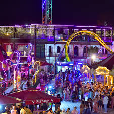
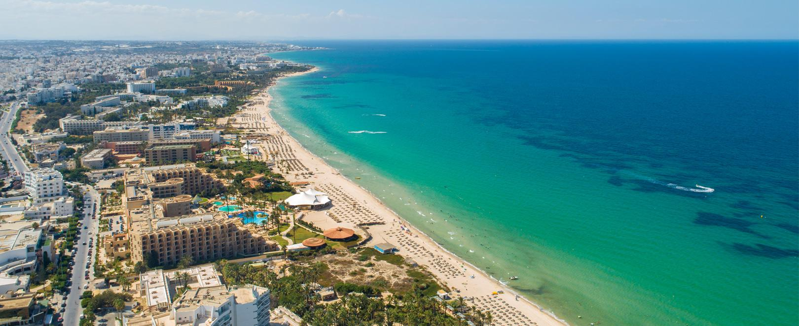

Sousse
La Perle du Sahel - plages, histoire et vie animée
À propos de Sousse
Sousse est une ville côtière située sur la côte est de la Tunisie, célèbre pour ses belles plages, sa médina inscrite au patrimoine mondial de l'UNESCO et son riche patrimoine historique qui remonte à l'époque punique et romaine.
Emplacement
Sousse se trouve sur le golfe d'Hammamet, entre Monastir et Hammamet. Grâce à son port et ses infrastructures touristiques, elle est l'une des destinations balnéaires les plus populaires du pays.
Histoire
Fondée à l'époque phénicienne et développée durant l'ère romaine, Sousse a été un important centre commercial et portuaire. Le Ribat et la médina traduisent son importance historique pendant les périodes islamiques et médiévales.
Caractéristiques
- Plages larges et longues promenades côtières.
- Une médina classée au patrimoine mondial et de nombreux monuments historiques.
- Un port touristique animé (Port El Kantaoui) et une offre hôtelière importante.
- Vie nocturne et marchés traditionnels avec artisanat local.
Top Places à Visiter
1.HANNIBAL PARK
un parc d'attractions familial majeur situé dans la zone touristique de Kantaoui à Sousse, en Tunisie. Il propose plus de 32 manèges et attractions pour tous les âges, ainsi que des options de restauration sur place.


2. La Médina de Sousse
Quartier historique aux ruelles étroites, souks colorés et monuments anciens — un incontournable pour ressentir l'âme de la ville.


3. Port El Kantaoui
Marina de plaisance moderne, restaurants et activités nautiques; idéale pour une promenade en soirée.


4. Plages de Sousse
Plages de sable fin, parfaites pour se détendre, nager et pratiquer des activités nautiques.



- Le Restaurant du Port : Fruits de mer frais avec vue sur la marina.
- Café de la Médina : Endroit traditionnel pour goûter aux spécialités locales.
- La Terrasse du Ribat : Cadre panoramique et cuisine méditerranéenne.
- Café du Port : Pause détente avec vue sur les bateaux.
- Salon de Thé de la Médina : Pour un thé à la menthe au cœur de la vieille ville.